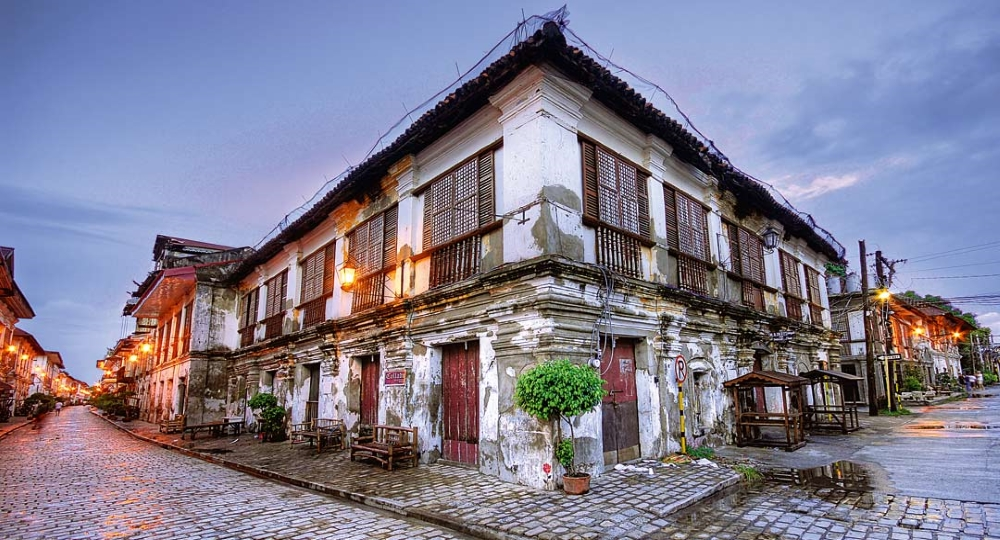
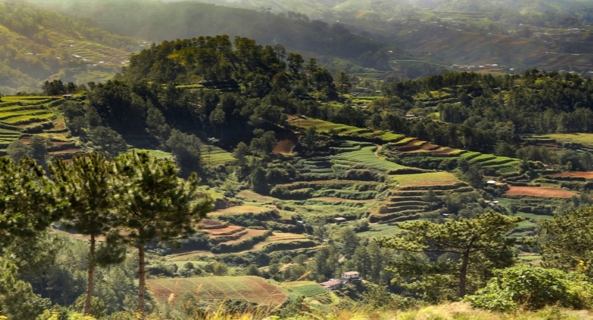
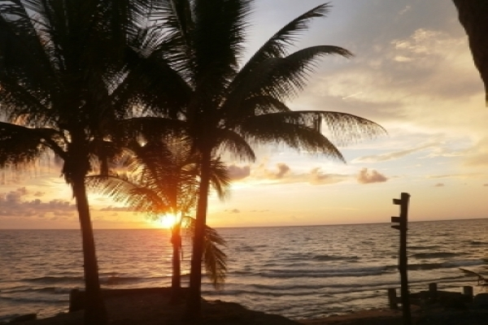
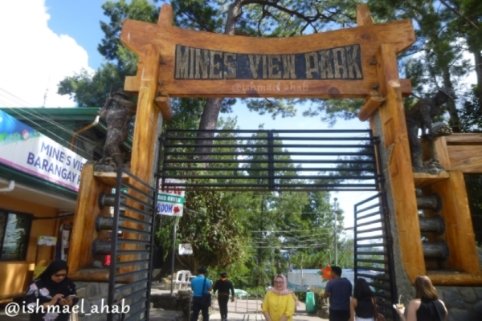

Vigan City
Vigan is a city in the Philippines, on the west coast of Luzon island. It's known for its preserved Spanish colonial and Asian architecture. Calle Crisologo dominates the Mestizo district, with its cobblestone streets, malecón, horse-drawn carriages and rustic mansions. Near the white baroque Vigan Cathedral are Plaza Salcedo, offering fountain light shows, and Plaza Burgos, known for its street-food stalls.

Sagada
Sagada is a town in the Cordillera Mountains, within the Philippines’ Mountain Province. Echo Valley’s hanging coffins are displayed high on cliffs, while centuries-old coffins are stacked in burial sites like Lumiang Cave. The nearby Sumaguing Cave has unusual limestone formations. To the north, Bomod-ok Falls has a natural swimming pool. Rice terraces are carved into the area's surrounding mountainsides.
.jpg)
Pugad resort in La-union
Beneath the tropical green forest of Pugo, La Union, sits the ever-famous Adventure Park, which is widely-known as PUGAD. Among the vast resorts and adventure parks in the province, it is one if not the best destination for tourists from around the Philippines.
One thing that PUGAD has, and is the reason why it is the most visited so far, is the climate. Since Pugo is not far from the City of Baguio.

Aringay Beach in La-Union
ARINGAY, LA UNION - has a long stretch of fine gray sand shoreline, with a clear view of the golden sunset. The sand has a mixture of shells and colorful corals. Of course, the highlight of La Uion, the gigantic but surfing friendly waves.
Bangui Windmills in Ilocos
Bangui Wind Farm is a wind farm in Bangui, Ilocos Norte, Philippines. The wind farm uses 20 units of 70-metre high Vestas V82 1.65 MW wind turbines, arranged in a single row stretching along a nine-kilometer shoreline off Bangui Bay, facing the West Philippine Sea.

Mines View in Baguio City
Mines View Park is an overlook park on the northeastern outskirts of Baguio in the Philippines. It is five kilometers away from the Heart of Baguio, passing through the Botanical Garden, the Mansion House, Wright Park, and the Pacdal Circle.
Located on a land promontory 4 km from downtown Baguio.